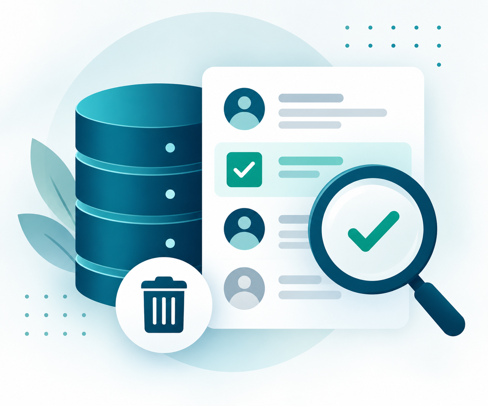
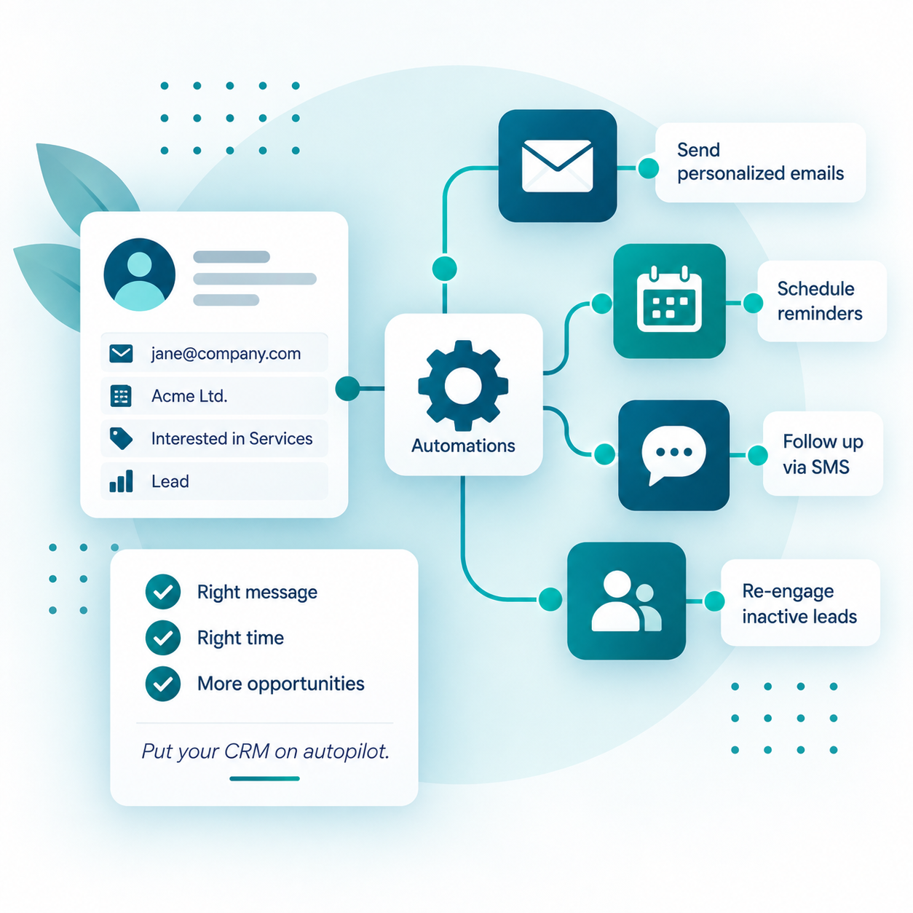
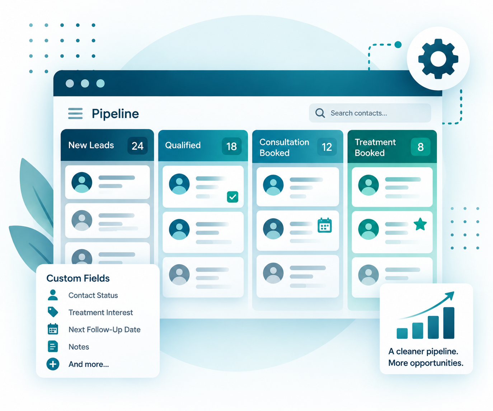
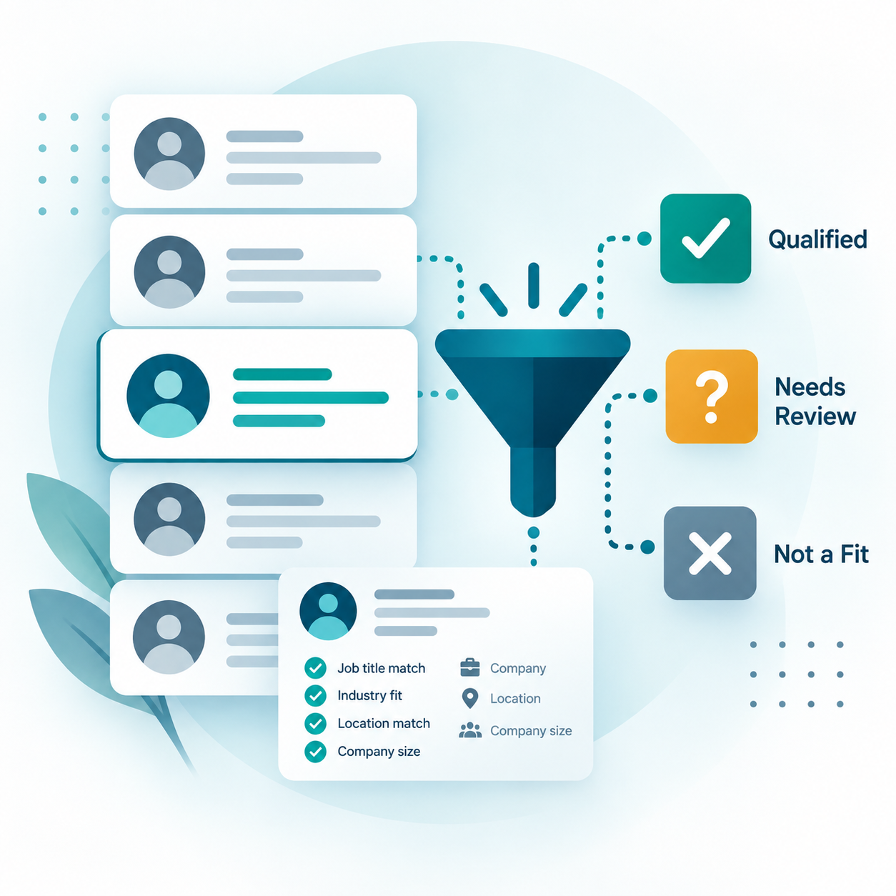
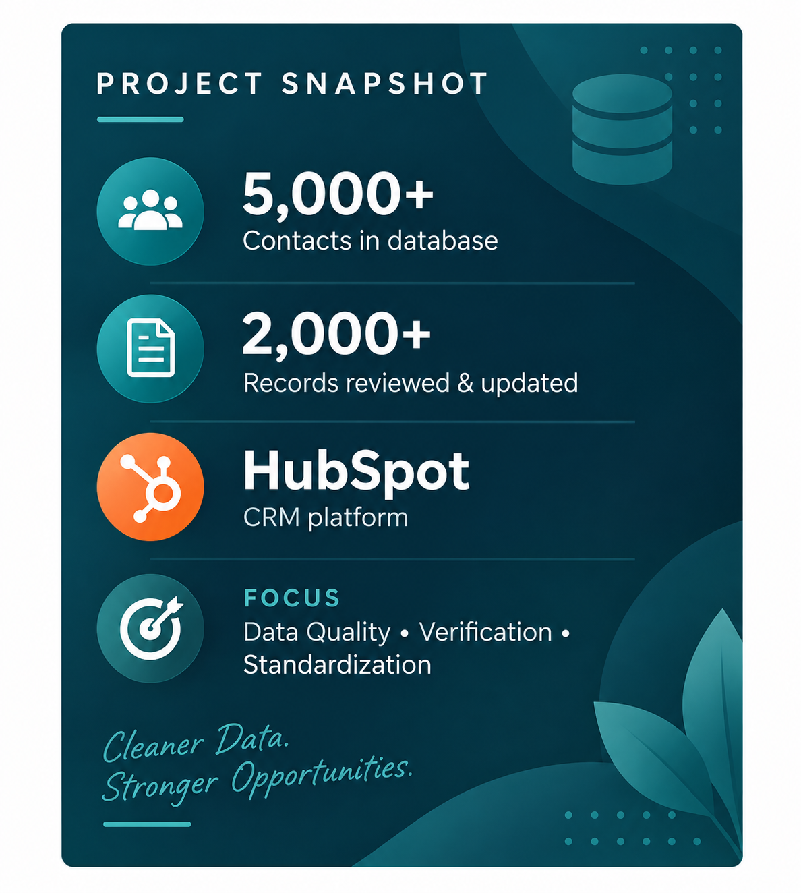
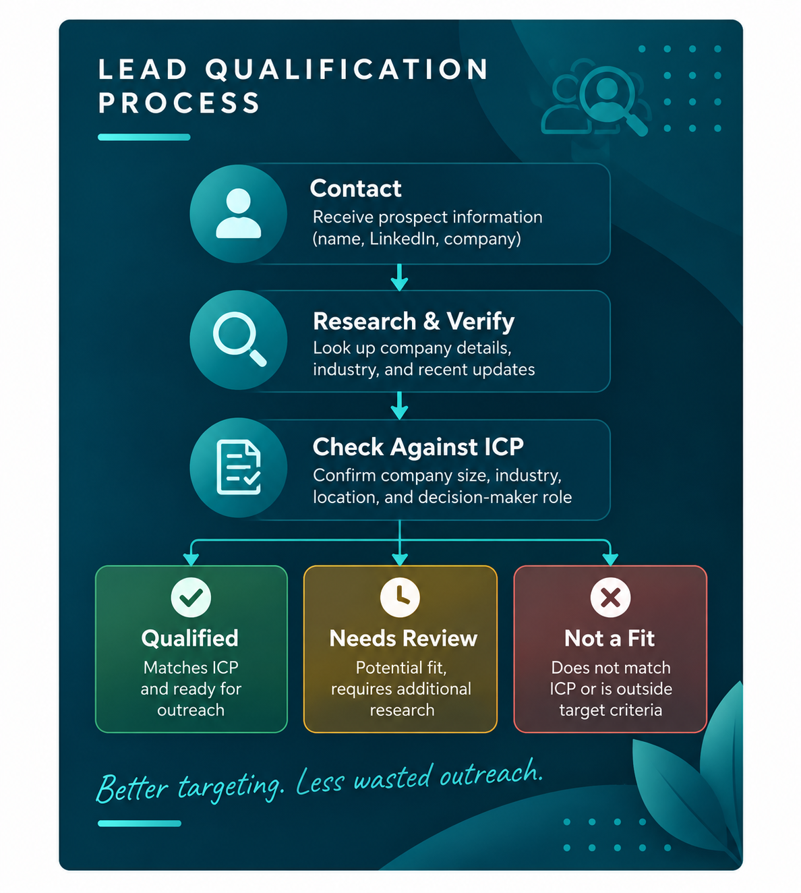

Outdated data
Duplicates, incomplete records, and old contact information make the database harder to trust.
I audit and rebuild messy CRM databases so businesses can trust their data, recover missed opportunities, and create reliable follow-up systems.
Your CRM has plenty of contacts—but it’s difficult to tell what’s accurate, what matters, and what needs attention next.
Duplicates, incomplete records, and old contact information make the database harder to trust.
Your team can’t easily see who needs attention, what happened last, or what should happen next.
Without a reliable process, good leads slip through the cracks and manual work keeps piling up.
That’s where I come in.
Practical support that makes your CRM cleaner, clearer, and easier to use.

Identify outdated, incomplete, duplicate, and incorrectly categorized records so you know what needs fixing.

Review and organize contacts using clear qualification criteria, statuses, and data standards.

Create cleaner stages, statuses, fields, and processes so contacts move through your CRM consistently.

Build practical workflows for lead follow-up, reminders, reactivation, and repetitive CRM tasks.
Fix the foundation first. Automate what makes sense second.
I review your CRM structure, contact data, statuses, pipelines, and follow-up process to understand what’s working and what’s getting in the way.
I clean and standardize your data, identify records that need review, and create clearer categories and statuses.
I improve the CRM structure, pipelines, fields, and follow-up process so your team has a clear system to work from.
Where it makes sense, I build practical automations that reduce repetitive work and keep opportunities from slipping through the cracks.
A look at how I’ve helped businesses clean up CRM data and improve lead qualification.

A large CRM database contained thousands of contacts that needed to be reviewed and verified. Incomplete location data, outdated employment information, and unreliable records made accurate segmentation and outreach difficult.
Reviewed contact records individually, verified current employment and company information using LinkedIn, corrected Country/Region data, identified contacts who had left their companies, and standardized CRM records using clear data-quality rules.
A cleaner, more reliable CRM with standardized data and clearer visibility into outdated records—giving the team greater confidence in segmentation, compliance, and future outreach.

A prospect list contained contacts and companies that needed review before outreach. Job titles or company names alone weren’t enough to determine whether a contact was a genuine prospect.
Researched contacts and companies using LinkedIn and available business information, verified company relevance, checked decision-maker roles against defined criteria, and categorized records as qualified, not qualified, or needing further review.
A more focused prospect database with clearer qualification decisions—helping the client prioritize relevant opportunities and reduce time spent reviewing unsuitable leads.

I help businesses bring order to messy CRM data, unclear processes, and inconsistent follow-up.
Over the years, I’ve worked behind the scenes supporting businesses with operations, lead management, database maintenance, research, marketing, and client processes.
One thing kept showing up: when the data is messy and the process isn’t clear, even good teams lose time and opportunities. That led me to focus more deeply on CRM operations—cleaning and organizing data, improving how contacts and opportunities are tracked, and building practical follow-up systems that are easier for teams to manage.
Understand the process first. Clean and organize what’s already there. Then automate where it genuinely makes sense.
Whether your data needs cleaning, your pipeline needs structure, or your follow-up process needs improving, let’s talk about what’s getting in the way.
Start a ConversationBefore publishing: replace YOUR_EMAIL_HERE in the site code with your preferred business email.